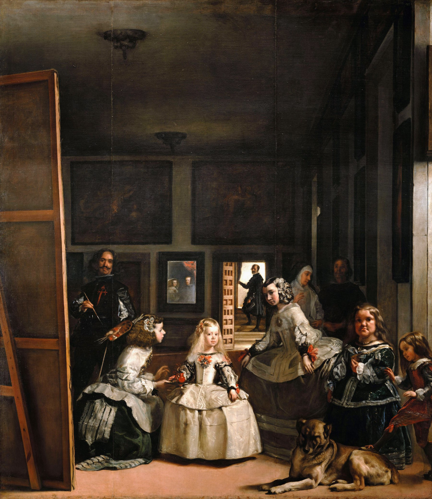

《宫娥》· 一间会回望你的房间

第一眼，《宫娥》像是一次被打断的王室肖像绘制：小公主站在侍从之间。再看一会儿，整间房仿佛转向了我们——画家面对一张我们看不见正面的画布，后墙镜中出现国王与王后，多个人物望向画外。究竟谁在看谁，始终无法安定下来。
01构图Composition
普拉多博物馆确认，场景是马德里王宫的“王子房”。委拉斯开兹把它组织成一个很深的暗盒：墙面层层后退，尽头敞开的门通向一小块亮光；天花线与墙上画框继续加强纵深。
玛格丽特公主占据最亮的中心，但画家、镜子与门口又形成三条互相竞争的竖向支点。视线在它们之间往返，无法只停在一个主角身上。
02配色Color Theory
大部分房间由黑褐、暗赭与银灰组成。正因为背景克制，脸庞与公主的象牙白裙装不必依赖强聚光，也能显得明亮。
缎带、面颊和服饰上零星的灰粉与暗红，横向穿过人物群，把前景众人连接在大片暗色空间里。
03技法Technique
普拉多记录本作尺寸达 320.3 × 279.1 厘米。巨幅画面允许委拉斯开兹在宽松概括的色块与少数清晰亮点之间切换；拉开距离后，衣裙、头发和反光上的简略笔触会自动合成为可信材质。
纵深也主要靠明度，而不是硬轮廓：明亮的前景人物、昏暗的中段墙面、发光的镜子与逆光门口，组成连续的光层。
04为何动人Why It Moves Us
看不见正面的画布与映出君主的镜子，让观众的位置变得不稳定：我们也许站在国王与王后的位置，也许只是恰好进入了众多目光投向的空间。这个歧义不需要被解开。
它真正持久的刺激，在于把“再现”本身搬上舞台——画家、被画者、观看者与镜中影像不断交换角色。
05作品背景Background
普拉多将本作定年为1656年，并依据安东尼奥·帕洛米诺1724年的记述辨认出公主身边的大多数人物：两位宫娥 María Agustina Sarmiento 与 Isabel de Velasco、Mari Bárbola、Nicolasito Pertusato、Marcela de Ulloa、门口的 José Nieto，以及委拉斯开兹本人。
馆方还指出，帕洛米诺在西班牙画家史中为这幅画单独设了一节；这说明它很早就获得了非同寻常的地位。
06可借鉴Steal This
- 用光的间隔制造纵深：亮前景、暗中段、远处一点小亮光。
- 给视线设置多个支点：中心人物之外，再用镜子、门口或边缘人物把注意力拉走。
- 有意藏起一个关键物：不让我们看到画布正面，观众就会主动参与推理。
{kind=link}